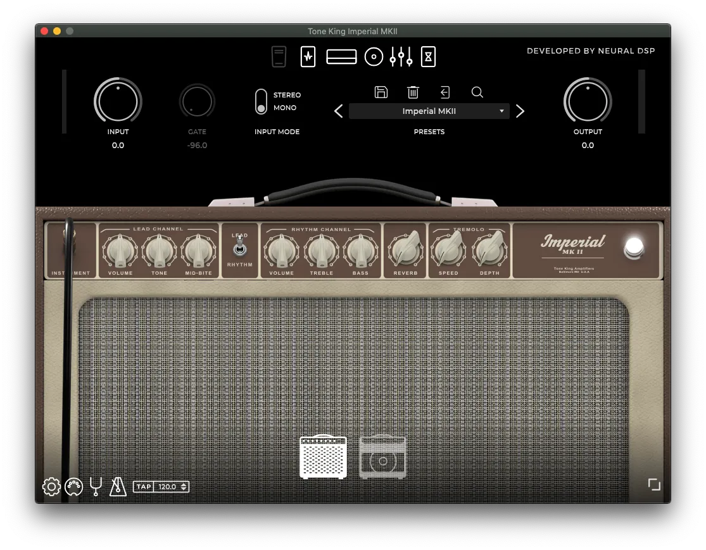

Tone King Imperial MKII
Tông màu cổ điển đích thực trong một gói hiện đại.
Giá : 1.200.000 Đ


Cân bằng giữa đặc điểm cổ điển mang tính biểu tượng và sự đổi mới là một nghịch lý mà rất ít người có thể dung hòa được. Tone King là một trong những ví dụ đáng chú ý nhất về điều này trong thế giới ampli đèn. Nó được đóng gói với tông màu sáng và sạch tuyệt đẹp gợi nhớ về thời đại mang tính biểu tượng nhất. Tuy nhiên, nó cũng bao gồm các tính năng độc đáo như bộ suy giảm phản ứng tích hợp - tất cả đều được mô hình hóa cẩn thận để tái tạo mọi sắc thái âm thanh. Bộ khuếch đại này được thiết kế để làm hài lòng và truyền cảm hứng, và chúng tôi tự hào giới thiệu bộ Tone King Imperial MKII.
Tông màu wah wah mang tính biểu tượng với độ quét sâu. Bằng cách ánh xạ bàn đạp biểu cảm có thể điều khiển MIDI, bạn có thể nhanh chóng cài đặt plugin để tìm hiểu phạm vi bàn đạp của bạn, giúp bạn kiểm soát toàn bộ quá trình quét. Nếu bạn không có bàn đạp biểu thức, hãy bật tính năng tự động chạy!Một máy nén đơn giản cung cấp nhiều chất tẩy rửa như thủy tinh. Overdrive 1 & 2 cung cấp cho bạn mọi thứ từ mức tăng tinh tế đến độ bão hòa ống cổ điển.
Một mô-đun cabsim toàn diện với hàng trăm IR được thực hiện bởi 5by5 Studios. Có hai loa, tám micrô ảo và phần micrô phòng độc quyền của chúng tôi. Ngoài hàng trăm IR, mô-đun này có thể được sử dụng để tải các tệp IR của riêng bạn.Chorus và Stereo Delay được thiết kế để cung cấp âm thanh Bucket Brigade (BBD) ấm áp. Reverb bao gồm tất cả mọi thứ, từ bầu không khí tinh tế đến cảnh quan âm thanh gần như vô hạn.Không có DAW? Không vấn đề gì! Chạy plugin Tone King Imperial MKII như một ứng dụng độc lập mà không cần phần mềm bổ sung.
Dùng thử ngay bản miễn phí tại đây , ở đây chúng tôi có thể cho bạn dùng thử trước khi thanh toán trong vòng 7 ngày , hãy thử ngay .
hãy thêm sản phẩm của bạn vô giỏ hàng , thêm thông tin của bạn và lựa chọn thêm những sản phẩm khác phù hợp với tiêu chuẩn bạn.
Mua ngay t đây , chỉ với giá rẻ bạn sẽ nhận được gói âm hưởng đặc sắc âm thanh sống động , truy cập cùng với chúng tôi .
Hãy để chúng tôi tạo âm thanh giúp bạn !
Trang Chủ